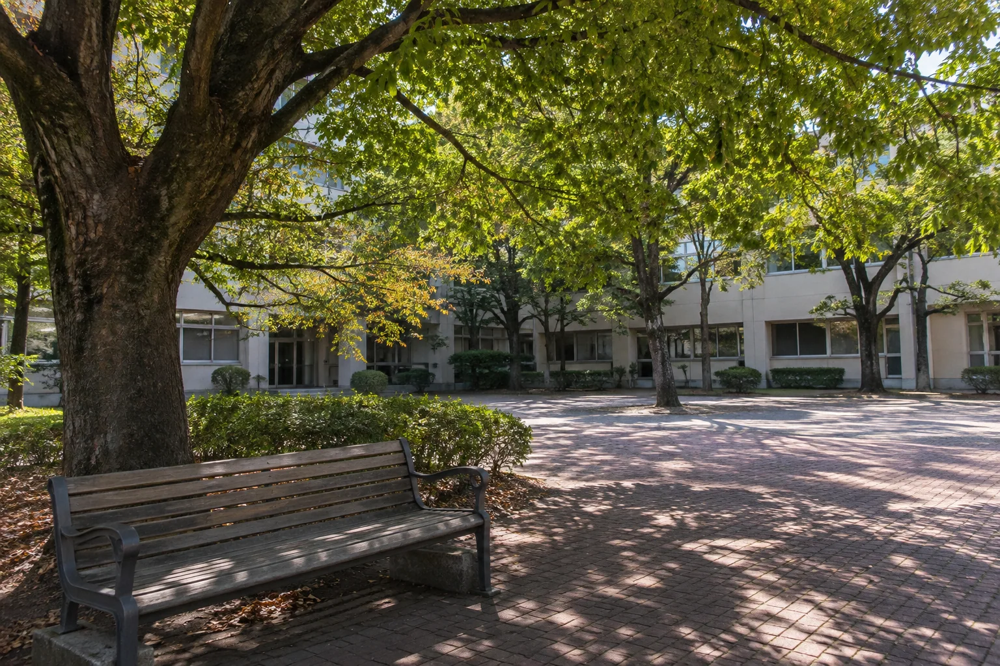
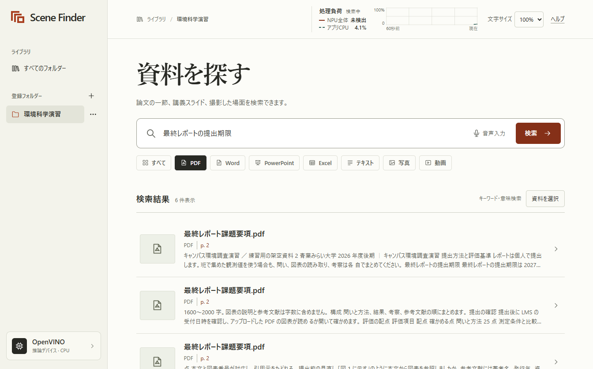

通常版
セットアップEXE ／ 約727 MB
EXEを実行すると、資料検索と音声入力を使えます。初めて要約・整理するときに、画面からGemma（約4.36 GB）を追加できます。
通常版をダウンロード 通常版のチェックサム（SHA-256）Windows 11 x64 用・無料
PDFの一節、表計算のセル、実習動画の一場面。
PCにある資料を、日本語の言葉や音声で探せます。
バージョン 0.3.0 ／ EXE・約727 MB

授業やゼミのフォルダーを登録し、探したい内容を入力します。

登録した資料の検索・音声認識・要約はこのPC内で処理します。検索は対応するIntel NPUまたはCPU、音声認識と要約にはCPUを使います。
どちらも Windows 11 x64 用です。利用するPCに合わせて選んでください。
セットアップEXE ／ 約727 MB
EXEを実行すると、資料検索と音声入力を使えます。初めて要約・整理するときに、画面からGemma（約4.36 GB）を追加できます。
通常版をダウンロード 通常版のチェックサム（SHA-256）モデル同梱ZIP ／ 約5.09 GB
ネット接続のない教室や、複数台にまとめて入れる場合に。ZIPをすべて展開し、3個のモデルデータと同じ場所にある学内版EXEを実行します。
大学用ZIPをダウンロードスタートメニューから「Scene Finder」を開き、「フォルダーを追加」で授業資料の保存先を選んでください。解析が終わると検索できます。操作ガイドは画面上部の「ヘルプ」から開けます。
セットアップには電子署名がありません。大学の管理端末では学内の配布手順に従ってください。同梱モデルなどのライセンスはインストール先の app/notices に収録しています。

スタディサプリ情報Ⅰ・プログラミング講師
青山学院中等部・青山学院大学非常勤講師